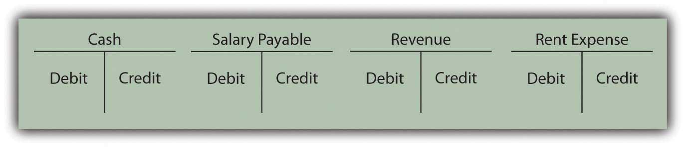

At the end of this section, students should be able to meet the following objectives:
Question: Transaction analysis determines the changes in account balances as the events of each day take place. Financial statements provide a formal structure to communicate the resulting balances periodically to an array of interested parties. Revenues, expenses, gains, and losses are presented on an income statement where they are combined to arrive at reported net income for the period. Total income earned and dividends paid by the company over its entire life are netted to compute the current retained earnings balance. Assets, liabilities, capital stock, and retained earnings are all displayed on a balance sheet. Changes in cash are separated into operating activities, investing activities, and financing activities and disclosed on a statement of cash flows. Notes offer pages of additional explanatory information. The amount of financial data that is readily available is impressive.
The accountant for a business of any significant size faces a daunting challenge in creating financial statements: gathering, measuring, and reporting the impact of the many varied events that occur virtually every day. As an example, for 2008, Xerox Corporation disclosed revenues of over $17.6 billion and operating expenses and other costs of $17.4 billion. At the end of 2008, the Kellogg Company reported holding $897 million in inventory—which is a lot of cereal—and indicated that its operating activities that year generated a net cash inflow of nearly $1.3 billion. How can any organization possibly amass and maintain such an enormous volume of data so that financial statements can be produced with no material misstatements?
Answer: Over five hundred years ago, Venetian merchants in Italy developed a system that continues to serve in the twenty-first century as the basis for accumulating financial data throughout much of the world. Today, when every aspect of modern society seems to be in a constant state of flux, a process that has remained in use for over five centuries is almost impossible to comprehend. However, the double-entry bookkeepingA mechanical process created over five hundred years ago and documented by Fra Luca Bartolomeo de Pacioli that facilitates the gathering and reporting of financial information. procedures that were first documented in 1494 by Fra Luca Bartolomeo de Pacioli (a friend of Leonardo da Vinci) remain virtually unchanged by time. Organizations, both small and large, use the fundamentals of double-entry bookkeeping to collect the information needed to produce financial statements that are fairly presented according to the rules of U.S. GAAP.
Question: This assertion sounds like science fiction. It hardly seems believable that Xerox keeps up with over $17.6 billion in revenue (approximately $48 million per day) using the same methods that Venetian merchants applied to their transactions during the Renaissance. How can a five-hundred-year-old bookkeeping system possibly be usable by today’s modern businesses?
Answer: State-of-the-art computers and other electronic devices are designed to refine and accelerate the financial accounting process but the same basic organizing procedures have been utilized now for hundreds of years. In simplest terms, accounting systems are all created to follow four sequential steps:
As explained previously, financial accounting starts by analyzing each transaction—every event that has a monetary impact on the organization—to ascertain the changes created in accounts such as rent expense, cash, inventory, and dividends paid. Fortunately, a vast majority of any company’s transactions are repetitive so that many of the effects can be easily anticipated. A sale on credit always increases both accounts receivable and revenues. Regardless of the time or place, a cash purchase of equipment increases the balance reported for equipment while decreasing cash. Computer systems can be programmed to record the impact of these events automatically allowing the accountant to focus on analyzing more complex transactions.
Question: The second step in the accounting system is listed above as “record.” At the beginning of this chapter, a number of transactions were presented and their impact on individual accounts determined. Following this analysis, some method has to be devised to capture the information in an orderly fashion. Officials could just list the effect of each transaction on a sheet of paper: increase inventory $2,000 and increase accounts payable $2,000; increase salary expense $300 and decrease cash $300. However, this process is slow and poorly organized. A more efficient process is required. What is the key to recording transactions after all account changes are identified?
Answer: An essential step in understanding the accounting process is to realize that financial information is accumulated by accountsDetailed records of the transactions and current balances of specific assets, liabilities, stockholders’ equity, revenues and expenses.. Every balance to be reported in a company’s financial statements is maintained in a separate account. Thus, for assets, an individual account is established to monitor cash, accounts receivable, inventory, and so on. To keep track of expenses, a number of additional accounts are needed, such as cost of goods sold, rent expense, salary expense, and repair expense. The same is true for revenues, liabilities, and other categories. A small organization might utilize only a few dozen accounts for its entire recordkeeping system. A large company could have thousands.
Based on the original Venetian model, the balance for each account is monitored in a form known as a T-accountUsed to maintain the monetary balance for each of the accounts reported by an organization with a left (debit) side and a right (credit) side. as displayed in Figure 4.2 "Common T-Accounts". This structure provides room for recording on both the left side (known as the debitLeft side of a T-account; it is used to show increases in assets, expenses, and dividends paid and decreases in liabilities, contributed capital, and revenues. side) and the right side (the creditRight side of a T-account used to show increases in liabilities, shareholders’ equity, and revenues and decreases in assets, expenses, and dividends paid. side).
Figure 4.2 Common T-Accounts
One side of each T-account records increases; the other side indicates decreases. For over five hundred years, the following rules have applied.
The following are accounts where debits reflect an increase and credits a decrease:
The following are accounts where credits reflect an increase and debits a decrease:
The debit and credit rules for these seven general types of accounts provide a short-hand method for recording the financial impact that a transaction has on any account. They were constructed in this manner so that the following would be true:
debits must always equal credits for every transaction.At first, the debit and credit rules might seem completely arbitrary. However, they are structured to mirror the cause and effect relationship found in every transaction. This is the basis of what the Venetian merchants came to understand so long ago: every effect must have a cause.
To illustrate:
There are only seven types of accounts. Therefore, a mastery of debit and credit rules can be achieved with a moderate amount of practice. Because of the fundamental position of debits and credits within every accounting system, this knowledge is well worth the effort required.
Link to multiple-choice question for practice purposes: http://www.quia.com/quiz/2092609.html
Most companies participate in numerous transactions each day that must be examined and organized so that financial statements can be prepared. This process requires four steps: analyze, record, adjust, and report. Over five hundred years ago, double-entry bookkeeping was created as a mechanical process to facilitate this gathering and reporting of financial information. A T-account is maintained for each of the accounts (such as cash, accounts payable, and rent expense) to be reported by a company. The left side of the T-account is the debit side, and the right side is the credit. Expenses and losses, assets, and dividends paid increase with debits. Liabilities, revenues and gains, capital stock, and retained earnings increase with credits. Debits always equal credits because every transaction must have both an effect and a cause for that effect.